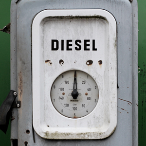
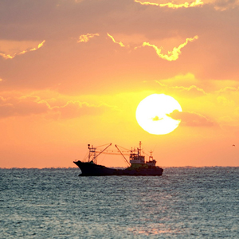

환경경영
HMM은 전세계적인 환경보전 노력에 동참하고 있습니다.
-
탄소 중립
-
기후 변화 대응
-
선박 재활용
'2050년 탈탄소 실현'
HMM은 IMO의 온실가스 감축 전략보다 도전적인 2050년 탈탄소 실현을 위해 적극적인 CO2 감축 전략 추진과 기술투자를 계획하고 있씁니다. 2020년 부터 인도받는 초대형 컨테이너선은 기존 선박 대비 원단위 온실가 스 배출량을 최소 52% 이상 감축하는 친환경 선박으로 건조되고 있습니다. 이를통해 규모의 경제뿐만 아니 라 전세계해 운에대한국제해사기구(IMO)의 목표를실현하는데한 걸음 나아가고있습니다.
-
30%
CO2 배출량
(2020년 목표) -
50%
CO2 배출량
(2030년 목표) -
Zero
CO2 배출량
(2050년 목표)
'기후변화 대응전략'
-

- 온실가스 종합관리시스템
- HMM은 기후변화 대응을 위해 온실가스종합관리시스템 (GEEMS)을 구축하여 온실가스 배출량을 실시간으로 모니터링 및 분석을 하고 있습니다.
-

- 에너지 효율 개선
- 선박의 에너지 효율개선 설비 적용 및 개발을 모색하여 건조중인 선박에 에너지 고효율 설비를 장착하는 등 에너지효율개선을 위해 노력하고 있습니다
'선박 재활용'
HMM은 선박 건조시에 석면, 폴리염화바이페닐(PCBs), 오존층파괴물질 등 유해한 물질의 소재를 식별하여 기재한 유해물질목록을 작성하고 있습니다. 유해물질목록은 선박해체업자로 하여금 유해물질에 관한 정보를 파악할 수 있게 하고,노동자 안전 확보 및 환경보존에 관한 대처도 가능하게 합니다.
선박 해체 시에는 사전조사를 통해 가장 안전하고 친환경적인 폐선장을 선정합니다. 선정된 폐선장에는 HMM이 직접 또는 폐선대행업자와 계약을 통해 자격 있는 감독자를 파견하여 폐선 전과정을 관리 감독 하고 있습니다.